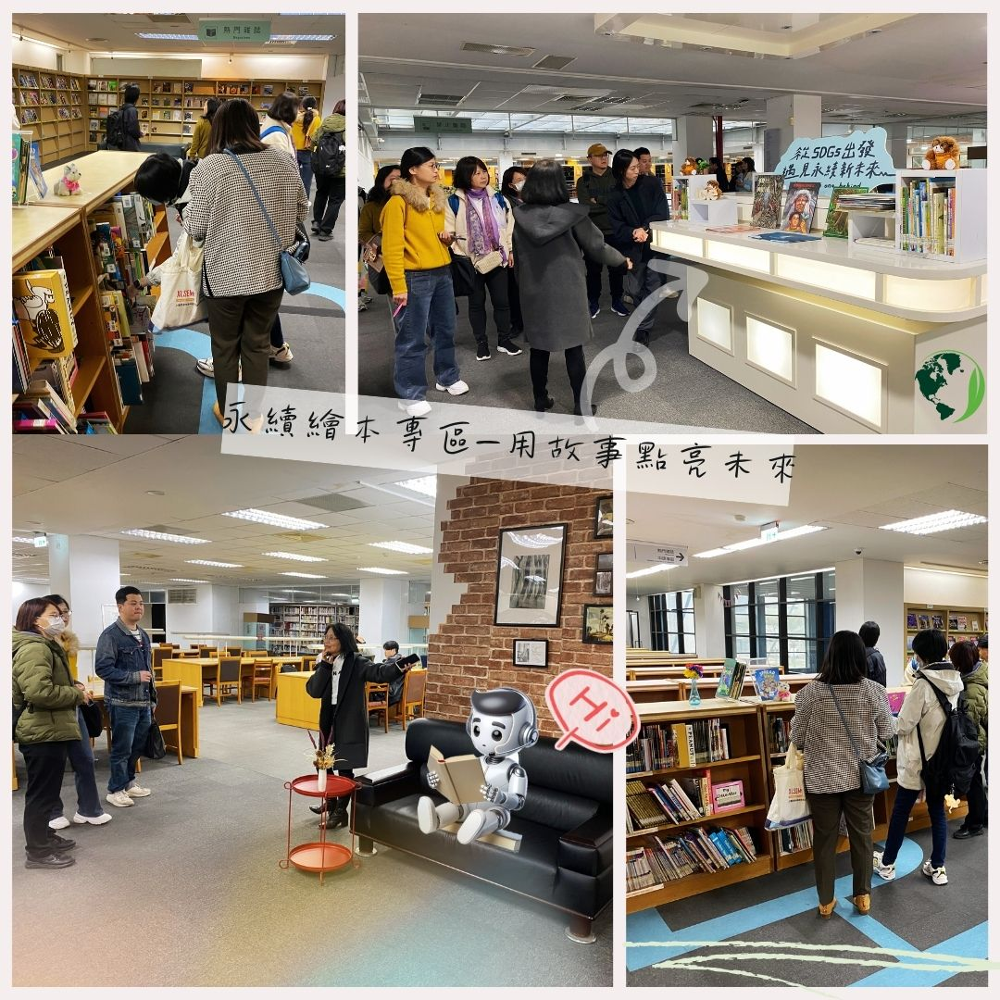

第8ステーション：絵本・漫画コーナー／サステナブル絵本コーナー
ここは夢と物語が交差する場所です。蔵書には人気の絵本や漫画の名作が揃っており、一度に絵本と漫画の巨匠たちの作品を楽しめます。
スペース内には外国語の絵本・漫画コーナーやSDGs持続可能な絵本コーナーも設けられています。
童話のように親しみやすい絵本の内容を通じて、環境の持続可能性や地球の未来について考えるきっかけを読者に提供し、読書を通じて行動を促し、物語で価値を伝えます。
ここは夢と物語が交差する場所です。蔵書には人気の絵本や漫画の名作が揃っており、一度に絵本と漫画の巨匠たちの作品を楽しめます。
スペース内には外国語の絵本・漫画コーナーやSDGs持続可能な絵本コーナーも設けられています。
童話のように親しみやすい絵本の内容を通じて、環境の持続可能性や地球の未来について考えるきっかけを読者に提供し、読書を通じて行動を促し、物語で価値を伝えます。